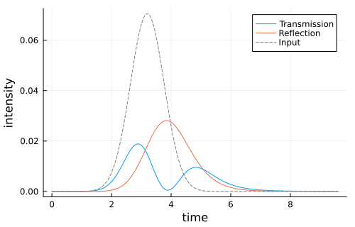
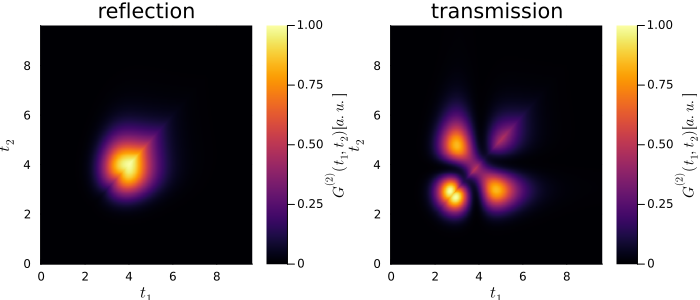

Bi-Directional Waveguide
This example constructs an SLH model for N=2 quantum dots coupled to a bi-directional waveguide. A coherent input pulse enters from the left (right-moving mode), and we compute the time evolution of the transmitted and reflected intensities.
using QuantumInputOutputusing SecondQuantizedAlgebrausing Symbolics: Symbolicsusing QuantumOpticsusing QuantumOpticsBase: dagger, static_operatorusing Plotsusing LaTeXStringsN = 2 # number of quantum dots# symbolic Hilbert spaceha(i) = NLevelSpace(Symbol("a$(i)"), 2)h = tensor([ha(i) for i = 1:N]...)# symbolic operatorsσ(α, i, j) = Transition(h, Symbol("σ_$(α)"), i, j, α)# symbolic parametersγR(i) = Symbolics.variable(Symbol("γ^{($(i))}_R"); T = Real) # right-moving decay rateγL(i) = Symbolics.variable(Symbol("γ^{($(i))}_L"); T = Real) # left-moving decay rateΔ(i) = Symbolics.variable(Symbol("Δ_{$(i)}"); T = Real) # detuningϕ(i, j) = Symbolics.variable(Symbol("ϕ_{$(i)$(j)}"); T = Real) # phase between QD-i and QD-jEin = Symbolics.variable(Symbol("E_{in}"); T = Real) # coherent drive in the right-moving inputWe use the symbolic operators and parameters to define the SLH triples, cascade the left and right moving channels, and concatenate them to obtain the Hamiltonian and Lindblad for the system.
G_d = SLH(1, Ein, 0) # coherent drive in the right-moving inputG_ϕ(i, j) = SLH(exp(1im * ϕ(i, j)), 0, 0) # phase shiftG_R(i) = SLH(1, √(γR(i)) * σ(i, 1, 2), -Δ(i) * σ(i, 2, 2)) # right-moving decayG_L(i) = SLH(1, √(γL(i)) * σ(i, 1, 2), 0) # left-moving decay# Cascade right-moving channelG_R_t = G_d ▷ G_R(1) ▷ G_ϕ(1, 2) ▷ G_R(2)# Cascade left-moving channel (reverse order)G_L_t = G_L(2) ▷ G_ϕ(1, 2) ▷ G_L(1)# Concatenate both channelsG_t = G_R_t ⊞ G_L_tH = hamiltonian(G_t)(0.5var"E_{in}"*sqrt(var"γ^{(1)}_R"))im * σ_1₁₂ + (-0.5var"E_{in}"*sqrt(var"γ^{(1)}_R"))im * σ_1₂₁ - var"Δ_{1}" * σ_1₂₂ + (0.5var"E_{in}"*sin(var"ϕ_{12}")*sqrt(var"γ^{(2)}_R") + (0.5var"E_{in}"*cos(var"ϕ_{12}")*sqrt(var"γ^{(2)}_R"))im) * σ_2₁₂ + (0.5var"E_{in}"*sin(var"ϕ_{12}")*sqrt(var"γ^{(2)}_R") + (-0.5var"E_{in}"*cos(var"ϕ_{12}")*sqrt(var"γ^{(2)}_R"))im) * σ_2₂₁ - var"Δ_{2}" * σ_2₂₂ + ((0.5sin(var"ϕ_{12}")*sqrt(var"γ^{(1)}_R")*sqrt(var"γ^{(2)}_R") + 0.5sin(var"ϕ_{12}")*sqrt(var"γ^{(2)}_L")*sqrt(var"γ^{(1)}_L")) + (-0.5cos(var"ϕ_{12}")*sqrt(var"γ^{(1)}_R")*sqrt(var"γ^{(2)}_R") + 0.5cos(var"ϕ_{12}")*sqrt(var"γ^{(2)}_L")*sqrt(var"γ^{(1)}_L"))im) * σ_1₁₂ * σ_2₂₁ + ((0.5sin(var"ϕ_{12}")*sqrt(var"γ^{(1)}_R")*sqrt(var"γ^{(2)}_R") + 0.5sin(var"ϕ_{12}")*sqrt(var"γ^{(2)}_L")*sqrt(var"γ^{(1)}_L")) + (0.5cos(var"ϕ_{12}")*sqrt(var"γ^{(1)}_R")*sqrt(var"γ^{(2)}_R") - 0.5cos(var"ϕ_{12}")*sqrt(var"γ^{(2)}_L")*sqrt(var"γ^{(1)}_L"))im) * σ_1₂₁ * σ_2₁₂L = jump_operator(G_t)L_R = L[1](var"E_{in}"*cos(var"ϕ_{12}") + (var"E_{in}"*sin(var"ϕ_{12}"))im) + (cos(var"ϕ_{12}")*sqrt(var"γ^{(1)}_R") + (sin(var"ϕ_{12}")*sqrt(var"γ^{(1)}_R"))im) * σ_1₁₂ + sqrt(var"γ^{(2)}_R") * σ_2₁₂L_L = L[2]sqrt(var"γ^{(1)}_L") * σ_1₁₂ + (cos(var"ϕ_{12}")*sqrt(var"γ^{(2)}_L") + (sin(var"ϕ_{12}")*sqrt(var"γ^{(2)}_L"))im) * σ_2₁₂Note that this Hamiltonian and Lindblad terms (without the drive) describe the collective decay of the quantum dots.
Next, the numerical parameters and functions of the system are defined, and we translate the symbolic expression to QuantumOptics.jl operators to numerically solve the dynamics.
γ_ = 1.0β = 0.9 # waveguide coupling fractionγRn = fill(γ_ * β / 2, N)γLn = fill(γ_ * β / 2, N)γ_add = fill(γ_ * (1-β), N) # free space decayΔn = fill(0.0, N)ϕn = fill(π/10, max(N - 1, 0))σt = 0.8 # pulse withα0 = √(0.1) # √ of total photon numbert0 = 4σt # pulse peakTend = 3t0u1(t) = 1/(sqrt(σt)*π^(1/4)) * exp(-(t - t0)^2 / (2*σt^2))Ein_t(t) = α0*u1(t)p_sym = [ [γR(i) for i = 1:N]; [γL(i) for i = 1:N]; [Δ(i) for i = 1:N]; [ϕ(i, i + 1) for i = 1:(N-1)]]p_num = [γRn; γLn; Δn; ϕn]dict_p = Dict(p_sym .=> p_num)dict_p_t = Dict(Ein => Ein_t)# numeric basesba = NLevelBasis(2)b = tensor([ba for i = 1:N]...)H_QO = to_numeric(H, b; parameter = dict_p, time_parameter = dict_p_t)L_R_QO = to_numeric(L_R, b; parameter = dict_p, time_parameter = dict_p_t)L_L_QO = to_numeric(L_L, b; parameter = dict_p, time_parameter = dict_p_t)σ_qo(α, i, j) = to_numeric(σ(α, i, j), b)J_add = [√(γ_add[i])*σ_qo(i, 1, 2) for i = 1:N]function input_output(t, ρ) Ht = H_QO(t) J = [L_R_QO(t), L_L_QO(t), J_add...] return Ht, J, dagger.(J)end# time evolutionT = [0:0.005:1;]*Tendψ0 = tensor([nlevelstate(ba, 1) for _ = 1:N]...)t, ρt = timeevolution.master_dynamic(T, ψ0, input_output)# transmitted and reflected intensityI_R = zeros(length(t))I_L = zeros(length(t))for (i, ti) in enumerate(t) LR = L_R_QO(ti) LL = L_L_QO(ti) I_R[i] = real(expect(LR'LR, ρt[i])) I_L[i] = real(expect(LL'LL, ρt[i]))endp = plot(t, I_R; label = "Transmission")plot!(p, t, I_L; label = "Reflection")plot!(p, t, abs2.(Ein_t.(t)); color = :grey, ls = :dash, label = "Input")plot!( p; xlabel = "time", ylabel = "intensity", legend = :best, grid = true, size = (500, 320),)p
Quantum regression theorem
In the following, we calculate the two-time correlation function $G^{(2)}(t_1,t_2)$ for the transmitted and reflected pulse via the quantum regression theorem.
# two-time correlation function G2(t1, t2)lT = length(T)G2 = zeros(lT, lT) # transmissionG2_ref = zeros(lT, lT) # reflectionMaterialize the lazy TimeDependentSum to a concrete operator at each time, so the quantum-regression products below give a plain operator usable as the solver's initial state.
L0(t) = dense(static_operator(L_R_QO(t)))L0_dag(t) = dagger(L0(t))L0_ref(t) = dense(static_operator(L_L_QO(t)))L0_ref_dag(t) = dagger(L0_ref(t))for it1 = 1:(lT-1) ρ_t1 = ρt[it1] t_2, ρ_2 = timeevolution.master_dynamic( T[it1:end], L0(T[it1]) * ρ_t1 * L0_dag(T[it1]), input_output, ) # transmission G2_ls = real.([expect(L0_dag(t_2[j]) * L0(t_2[j]), ρ_2[j]) for j = 1:length(t_2)]) G2[it1, it1:end] = G2_ls G2[it1:end, it1] = G2_ls t_2_r, ρ_2_r = timeevolution.master_dynamic( T[it1:end], L0_ref(T[it1]) * ρ_t1 * L0_ref_dag(T[it1]), input_output, ) # reflection G2_ls_r = real.([ expect(L0_ref_dag(t_2_r[j]) * L0_ref(t_2_r[j]), ρ_2_r[j]) for j = 1:length(t_2_r) ]) G2_ref[it1, it1:end] = G2_ls_r G2_ref[it1:end, it1] = G2_ls_rendp_ref = heatmap( T, T, G2_ref' / maximum(G2_ref); c = :inferno, title = "reflection", xlabel = L"t_1", ylabel = L"t_2", colorbar_title = L"G^{(2)}(t_1, t_2)[a.u.]",)p_trans = heatmap( T, T, G2' / maximum(G2); c = :inferno, title = "transmission", xlabel = L"t_1", ylabel = L"t_2", colorbar_title = L"G^{(2)}(t_1, t_2)[a.u.]",)plot(p_ref, p_trans; layout = (1, 2), size = (700, 300))
Package versions
These results were obtained using the following versions:
using InteractiveUtilsversioninfo()using PkgPkg.status( [ "QuantumInputOutput", "SecondQuantizedAlgebra", "QuantumOptics", "Plots", "LaTeXStrings", ], mode = PKGMODE_MANIFEST,)Julia Version 1.13.0
Commit d1c37793dd2 (2026-09-09 19:00 UTC)
Build Info:
Official https://julialang.org release
Platform Info:
OS: Linux (x86_64-linux-gnu)
CPU: 4 × AMD EPYC 7763 64-Core Processor
WORD_SIZE: 64
LLVM: libLLVM-20.1.8 (ORCJIT, znver3)
GC: Built with stock GC
Threads: 1 default, 0 interactive, 1 GC (on 4 virtual cores)
Environment:
JULIA_PKG_SERVER_REGISTRY_PREFERENCE = eager
JULIA_DEBUG = Documenter,Literate
JULIA_NUM_THREADS = 1
Status `~/work/QuantumInputOutput.jl/QuantumInputOutput.jl/docs/Manifest.toml`
⌅ [7d9fca2a] Arpack v0.5.3
⌅ [861a8166] Combinatorics v1.0.2
[d38c429a] Contour v0.6.3
⌅ [82cc6244] DataInterpolations v9.5.0
[459566f4] DiffEqCallbacks v4.19.3
[77a26b50] DiffEqNoiseProcess v5.36.3
[c87230d0] FFMPEG v0.4.5
[7a1cc6ca] FFTW v1.10.0
⌅ [53c48c17] FixedPointNumbers v0.8.6
[069b7b12] FunctionWrappers v1.1.3
[28b8d3ca] GR v0.73.27
[42fd0dbc] IterativeSolvers v0.9.4
[1019f520] JLFzf v0.1.11
[682c06a0] JSON v1.8.0
[0b1a1467] KrylovKit v0.10.4
[b964fa9f] LaTeXStrings v1.4.1
[23fbe1c1] Latexify v0.16.12
[7a12625a] LinearMaps v3.11.4
[442fdcdd] Measures v0.3.3
[d8a4904e] MutableArithmetics v1.8.0
[77ba4419] NaNMath v1.1.4
[e7bfaba1] NumericalIntegration v0.3.4
[1dea7af3] OrdinaryDiffEq v7.8.1
[1344f307] OrdinaryDiffEqLowOrderRK v2.2.5
[ccf2f8ad] PlotThemes v3.3.0
[995b91a9] PlotUtils v1.4.4
[91a5bcdd] Plots v1.41.7
[aea7be01] PrecompileTools v1.3.4
[18f9eda6] QuantumInputOutput v0.5.3 `~/work/QuantumInputOutput.jl/QuantumInputOutput.jl`
[5717a53b] QuantumInterface v0.4.4
[6e0679c1] QuantumOptics v1.2.9
[4f57444f] QuantumOpticsBase v0.5.15
[3cdcf5f2] RecipesBase v1.3.4
[01d81517] RecipesPipeline v0.6.12
[731186ca] RecursiveArrayTools v4.5.1
[189a3867] Reexport v1.2.2
[05181044] RelocatableFolders v1.0.1
[ae029012] Requires v1.3.1
[0bca4576] SciMLBase v3.53.2
[431bcebd] SciMLPublic v1.3.0
[6c6a2e73] Scratch v1.3.0
⌅ [f7aa4685] SecondQuantizedAlgebra v0.11.0
[992d4aef] Showoff v1.1.1
[276daf66] SpecialFunctions v2.9.0
[90137ffa] StaticArrays v1.9.20
[10745b16] Statistics v1.11.5
[2913bbd2] StatsBase v0.34.13
[789caeaf] StochasticDiffEq v7.2.0
[d1185830] SymbolicUtils v4.46.4
[0c5d862f] Symbolics v7.39.2
[8ea1fca8] TermInterface v2.0.0
[1cfade01] UnicodeFun v0.4.1
[41fe7b60] Unzip v0.2.0
[2a0f44e3] Base64 v1.11.0
[ade2ca70] Dates v1.11.0
[f43a241f] Downloads v1.7.0
[37e2e46d] LinearAlgebra v1.13.0
[44cfe95a] Pkg v1.13.0
[de0858da] Printf v1.11.0
[3fa0cd96] REPL v1.11.0
[9a3f8284] Random v1.11.0
[2f01184e] SparseArrays v1.13.0
[fa267f1f] TOML v1.0.3
[cf7118a7] UUIDs v1.11.0
Info Packages marked with ⌅ have new versions available but compatibility constraints restrict them from upgrading. To see why use `status --outdated -m`
This page was generated using Literate.jl.